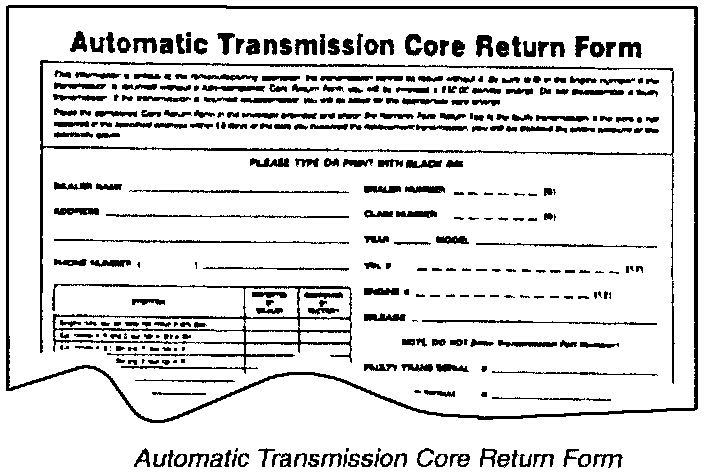

Core Return Information
Fill out the Core Return Form (see sample) and the Warranty Parts Return Tag completely. Be sure to provide complete information (full 17 digit VIN, 12 digit engine number, etc.). This information is critical to the remanufacturing process. Put the completed Core Return Form in the envelope provided, and attach the Warranty Parts Return Tag to the transmission. If you return a transmission without a properly filled-out Core Return Form, your warranty claim will be debited a $50.00 service charge.Pack the faulty transmission and torque converter in the container provided (use the torque converter retaining strap and all hole plugs). If you return a transmission without the shipping container, you will be billed a $100.00 container charge.
Ship the faulty transmission and torque converter according to the "Core Return Instructions" provided.

^ If the core is not received at the specified address within 15 days of the date you received the replacement transmission, you will be debited $1,000. If the core is received more than 15 days after transmission receipt, your warranty claim will be recredited, less a $250 "Late Core" charge. If the core is not received within 60 days, you will be debited the full amount of the warranty claim. It you know you will not be able to return the core within 15 days, call the ATR Order Desk at (937) 332-6152 to request an extension.
^ Any disassembled core will be considered unusable. Your claim will be debited a $1,000 "Core Loss" charge.
^ If a returned core shows No Trouble Found (NTF) on both a dynamometer run and a teardown/ inspection, your claim will be debited a $1,000 diagnostic charge.
You will not be billed for the returned transmission or its core value. That transmission will not be sent back to your dealership; it becomes the property of American Honda.